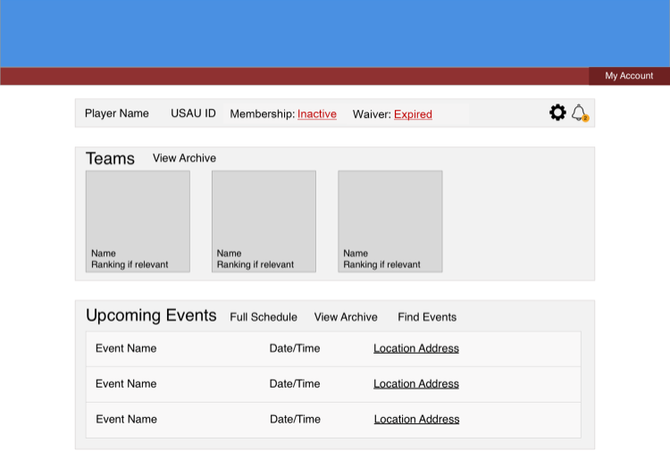

Hi-Fi Prototype
Usability Test
Task #1: It’s the end of the year and both of your current captains are graduating. You want to remove the old captains from the team information and add two new ones then check to confirm that the updates were made successfully.
User #1:
- Attempted to navigate to team page via My Account dropdown but that hotspot failed so she clicked on a team on the player dashboard
- Immediately clicked on the manage button then the roster one
- Tried clicking the pencil icon and got held up there for a while, expecting to edit captains on that page
- Eventually found the Team Info edit page and successfully removed the old captains and added new ones
- Selected the eye icon to preview changes
User #2:
- Clicked on a team on the main dashboard then clicked manage
- Seemed to hesitate on the Team Info page then clicked through the roster and events team pages but informed me that she was just looking throught my other pages
- Returned to the Team Info page, clicked edit and successfully removed and added captains; saving changes
Task #2: Now you want to see how your team from two years ago performed at sectionals. You’d also like to see the final scores for all the games.
User #1:
- Navigated back to dashboard with a swift click on My Account
- Clicked on team archive and then an upcoming event to get to the calendar
- Backtracked to the dashboard then clicked on event archive and a particular event to view specific scores
User #2:
- From the main dashboard, inferred that the team on the end of the list was the one from 2 years ago (not noticing the team archive)
- From that page, correctly found the team's record and indivual game scores
Task #3: It’s the beginning of a new season and you have several new rookies to roster for your team. Navigate to the roster page. What do you expect to happen/see when you click on the plus and edit options?
User #1:
- Had already visited the roster page in a previous task so navigated there quickly
- Believed that the plus icon would add players to the roster or invite new players to confirm
- Thought the pencil icon would provide an option to change a player's position or #, remove players, and designate players as captains
User #2:
- From the main dashboard quickly returned to the team roster (had seen that page previously)
- Correctly identified what the plus and edit buttons were for
- Told me that clicking the edit button could either bring up a pop-up window or make the fields of the roster table directly editable
Task #4: View your upcoming schedule as a list. What do you think will happen when you click on the address of the event? What will happen when you click on the star or calendar icons? Be as specific as possible. How about the icon to the right of the dropdown? What do you think it does and what options do you think would be provided?
User #1:
- From main dashboard, clicked full schedule and switched to list view
- Expected clicking the event location to take her to an event details page with an embedded Google Map
- Expected stars to indicate favorites and considered the possibility of filtering by favorites
- Seemed uncertain about the calendar icon, thinking aloud that events would probably be added automatically to the website's calendar view and determined that clicking it may pull up a tab to add the event to your own personal Google Calendar
- Recognized the icon to the right of the dropdown from other websites but didn't know what it was for
- When told that it was for filtering, thought that it could provide options to filter by team, date, or state
User #2:
- From the team page, looked at the events, then backtracked to the main dashboard
- Clicked on view schedule and then list view
- Expected Google Maps to open with the location of the event when the location is clicked
- Believed that the star would highlight the event in a different color and change the color of it on the calendar view
- On the calendar icon, mentioned that she thought the would events would automatically be included in the player calendar on the site (didn't mention adding to personal calendar)
- Identified the icon to the right of the dropdown as a filter icon and believed that it may filter by upcoming vs past events; mentioned search by name but reflected that that probably wouldn't be in the filter
Additional Feedback
User #1:
- Brought up how extra clicking was needed in order to go back
- Instead of dropdown for list vs calendar view, switch to a button because there are only 2 options (e.g. "Switch to calendar view")
- Add labels to the icon buttons (e.g. edit/preview)
- Put option to add captain on the roster page as well
User #2:
- Suggested combining buttons for add and edit on roster page into one
- Guessed clicking alerts on the main dashboard would display a list of notifications, which may include notifications for upcoming events or that membership was about to expire. When I mentioned that it could notify when registration just opens for an event, she mentioned that that'd be good too.
- Believed that clicking on the links for waiver and membership would allow the user to renew membership and sign the waiver
- Was unsure what the eye icon (preview) would do but, after an explanation, said that that made sense
- Considered making public player profile the same as personal but also reflected that that may not be necessary because events and teams were already on the main dashboard
- Remarked that phone number should not be required but when told that USAU already requires it, said that it's fine as long as it's not public
- Mentioned that she liked that the event ranking/place (e.g. 1st, 5th) was included in the event archive
- Believed that clicking an event name would take the user to an event page and that, to make the entire event row appear clickable, the color should change on hover
- When asked about potentially including news on the main dashboard, said that general news shouldn't be there but news for teams the player follows might be nice
- When asked about location of the favorite option, believed that it may be best on the event page
- Mentioned that it'd be nice if there were a way to roster players without players having to send their USAUID to their team managers
Conclusions and Planned Revisions
- Add back buttons to more pages
- Change the Calendar/List view dropdown to a button to switch between the two
- Remove the favorite icon from the event list and include it an event's page
- Consider either supplementing or replacing the pencil, eye, plus, and filter icons with words to make actions clearer
- Make sure the add to calendar button has a tooltip like "Add to personal calendar" and that it's clear from pop-up it will trigger that this will add an event to a user's external calendar
- Allow captains to be added from the roster page as well as the Team Info page
- Be sure to change the color of the entire event row on hover
- Consider switching out filter icon for a dropdown with "Show all teams" and options to select certain teams